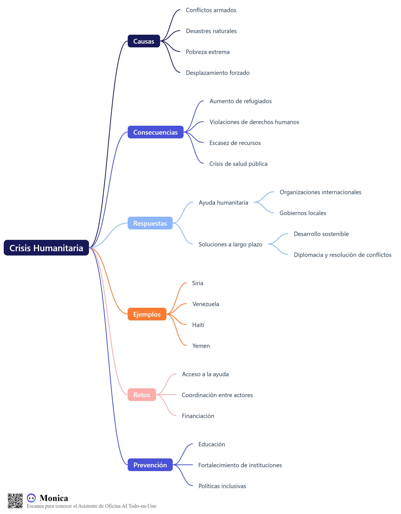

Descripción
El siguiente mapa conceptual organiza visualmente los componentes clave de una crisis humanitaria: sus causas, consecuencias, actores involucrados, respuestas internacionales y acciones humanitarias necesarias. Este recurso facilita la comprensión de la complejidad del fenómeno y cómo abordarlo.
Imagen del Mapa Conceptual
